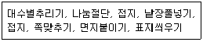
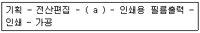

전자출판기능사 (2014-10-11 기출문제)
1과목: 출판론
1. 출판의 기능과 가장 거리가 먼 것은?
- 지식과 정보의 전달
- 독자의 논리적 사고 유발
- 긴급한 뉴스 전달과 해설 기능
- 오락물을 통한 사회 구성원의 긴장감 해소
(정답률: 84%)

2. 컬러인쇄에서 스크린 각도의 불량으로 발생하는 주된 문제점은?
- 색바램
- 무아레
- 뉴톤링
- 농도저하
(정답률: 85%)
3. 종이의 가장자리를 가지런하게 재단하지 않고 접지를 한 상태로 책을 만드는 제책 방식은?
- 파일 제책
- 무선철 제책
- 언셜(uncial)
- 언컷엣지(uncut edge)
(정답률: 71%)
4. [보기]의 작업은 출판제작 과정 중 어디에 해당되는가?

- 인쇄
- 출력
- 제책
- 교정
(정답률: 94%)
5. 잉크의 건조를 촉진시키기 위해서 잉크에 혼합하는 재료가 아닌 것은?
- 납
- 철
- 망간
- 코발트
(정답률: 52%)
6. 다음 중 리소그래픽 인쇄(lithographic printing)에 해당하는 인쇄 방법은?
- 평판인쇄
- 볼록판인쇄
- 공판인쇄
- 오목판인쇄
(정답률: 48%)
7. 다음 중 인쇄판 제조 시 감광막의 과열 건조로 발생하는 문제점으로 볼 수 없는 것은?
- 농담 얼룩
- 더러움 발생
- 현상 불량
- 종이 뜯김 발생
(정답률: 73%)
8. 다음 중 평판 인쇄기를 구성하는 부분이 아닌 것은?
- 판통
- 압통
- 잉크집
- 독터 블레이드
(정답률: 74%)
9. 출판물에 부여한 ISBN의 우리나라 국가 번호는?
- 81
- 82
- 89
- 90
(정답률: 74%)
10. 다음은 출판물의 제작공정이다. (a)에 알맞은 작업은?

- 제책
- 교정출력
- PS판 제판
- 표면가공
(정답률: 80%)
11. 출판물의 질이나 판매량을 높이기 위해 내용이나 장정 및 유통 등에 대하여 계획을 세우는 일을 무엇이라 하는가?
- 출판 기획
- 출판물 견적
- 베스트셀러(best seller)
- 스테디셀러(steady seller)
(정답률: 92%)
12. 발행기간에 따른 잡지의 분류법 중 순간지에 해당되는 내용으로 옳은 것은?
- 10일 단위로 발행한다.
- 2주일 단위로 발행한다.
- 3개월 단위로 발행한다.
- 1년 단위로 2회 발행한다.
(정답률: 69%)
13. 다음 중 ISSN을 부여할 수 없는 간행물은?
- 신문
- 회고록
- 연감
- 학회의 학술잡지
(정답률: 55%)
14. 평판인쇄에 사용되는 PS판의 특징이 아닌 것은?
- 화상의 선예도가 좋다.
- 판재료 및 작업의 표준화가 쉽다.
- 온도, 습도의 영향을 거의 받지 않는다.
- 중크롬산감광액을 사용하므로 암반응이 있어 사용유효기간이 길다.
(정답률: 49%)
15. 단행본의 출판기획에 관한 내용으로 가장 거리가 먼 것은?
- 발간 주기
- 간행시기와 예측부수
- 출판이념이나 편집방침
- 독자가 찾는 내용과 채산성
(정답률: 55%)
16. 서점에서는 정가가 2만원인 소설책을 100부 판매하였다. 할인율이 30%라고 한다면 서점이 출판사에 지불하여야 할 금액은 얼마인가?
- 140만원
- 150만원
- 160만원
- 170만원
(정답률: 69%)
17. 일반적으로 주간신문에 많이 이용되는 판형으로 규격은 254×374㎜ 정도이며 4×6판 계역에서는 8절인 판형은?
- 신사륙판
- 크라운판
- 사륙배판
- 타블로이드판
(정답률: 64%)
18. 제책공정 중 한 책 분량의 페이지가 순서대로 이어지도록 한 묶음씩 합치는 과정을 무엇이라고 하는가?
- 접기(folding)
- 쪽맞추기(gathering)
- 라운딩(rounding)
- 면지붙이기(end paper)
(정답률: 76%)
19. 다음 중 출판의 제작공정에 들어가지 않는 것은?
- 제책
- 원고 입력
- 원고 집필
- 지면 배치
(정답률: 58%)
20. 출판기획 시 예상되는 불확실성의 요소나 영향에 크게 구애받지 않는 도서의 예로 가장 적당한 것은?
- 소·중형 사전
- 접집 또는 총서류
- 수험용 학습참고서
- 정부 주도형의 교과용 도서
(정답률: 64%)
2과목: 전자 출판
21. 다음 중 DTP(Desk Top Publishing)의 과정 중 편집 및 디자인 작업에 해당하지 않는 작업은?
- 제판작업(camera work)
- 스캐닝(scanning) 작업
- 편집레이아웃(editorial layout) 작업
- 원고교정(manuscript proofreading) 작업
(정답률: 55%)
22. 정보 기술에 대한 설명 중 잘못된 것은?
- 정보의 처리와 관련된 개념이다.
- 정보의 매매와 관련된 개념이다.
- 정보의 유통과 관련된 개념이다.
- 정보의 검색과 관련된 개념이다.
(정답률: 77%)
23. 전자출판물(패키지형)의 가장 큰 장점은?
- 매체 선택면에서 수용자의 선택범위가 넓다.
- 신속한 정보제공, 전달과 수정이 용이하다.
- 휴대하기가 편리하고 해독기기가 필요 없다.
- 문자, 이미지, 사운드, 동영상 등의 멀티미디어 기능을 제공할 수 있다.
(정답률: 75%)
24. 둘 이상의 색선이나 점이 서로 조밀하게 배치되어 인접한 색과 혼합되어 보이는 현상은?
- 중간혼합
- 감색혼합
- 병치혼합
- 계시혼합
(정답률: 72%)
25. 온라인 전자출판에 관한 설명으로 적절하지 않은 것은?
- 출판물을 보관하기 위해 많은 공간이 필요 없다.
- 검색이 용이하므로 독자는 필요한 내용만을 골라 읽을 수 있다.
- 책의 내용이 편집된 순간 인쇄과정과 인쇄물의 유통과정을 거칠 필요가 없다.
- 온라인 출판은 일반적으로 만들어져서 배포하기까지의 시간이 일반 서적에 비하여 많이 소요된다.
(정답률: 84%)
26. 인터넷 전자출판물을 검색하기 위해 필요한 것은?
- 모뎀
- 웹브라우저
- 웹하드
- 비디오카드
(정답률: 91%)
27. 다음 중 출판기획의 요소과 중요성에 관한 설명으로 가장 거리가 먼 것은?
- 최상의 원고와 출판시장 현황에 중점을 둔다.
- 만들어질 책의 계획 전반을 포괄적으로 설계한다.
- 지식과 정보를 고려하여 무엇을 출판할 것인가를 구상한다.
- 일반적으로 전년도 진행사항에 대하여는 지속적 기획 여부와 관계없이 추진속도를 올려야 한다.
(정답률: 92%)
28. e-book의 특징에 관한 설명으로 가장 적절한 것은?
- 전용단말기가 필요 없다.
- 멀티미디어를 사용할 수 있다.
- 종이책에 비해 가격이 비싸다.
- 인쇄비용, 제책 비용 등이 많이 든다.
(정답률: 85%)
29. CIE 표준광원, 물체의 분광데이터, 표준관측자를 함께 곱하여 얻어지는 값으로 나타낼 수 있는 표색계는?
- 먼셀 표색계
- CIE XYZ 표색계
- CIE LAB 표색계
- 오스트발트 표색계
(정답률: 54%)
30. DOI 시스템의 주요 3가지 기능에 해당되지 않는 것은?
- 인터넷상의 모든 저작물의 관리
- 지적재산의 권리 소유자와 이용자의 연결
- 아날로그 저작물의 디지털 자동 포맷 변환
- 디지털 정보의 전자상거래에 필요한 필수 요소 및 자동 저작권 관리의 실현
(정답률: 72%)
31. 종이책 편집의 전산화 작업 공정순서로 옳은 것은?
- 전산편집→편집교정→필름출력→저술작업
- 저술작업→편집교정→필름출력→전산편집
- 저술작업→전산편집→편집교정→필름출력
- 필름출력→편집교정→전산편집→저술작업
(정답률: 69%)
32. 다음 중 이미지 입력용으로 사용되지 않는 것은?
- 키보드
- 이미지캡처
- 스캐너
- 디지털카메라
(정답률: 75%)
33. 다음 중 전자출판시스템의 정의와 가장 거리가 먼 것은?
- 프리프세스(Prepress)라고도 말한다.
- 완성된 인쇄용 원고를 활용한 인쇄 전반에 대한 작업 전체를 말한다.
- 출판물을 제작하기 위하여 사용하는 모든 전자기기를 말한다.
- 데스크탑 퍼블리싱, DTP 시스템 등의 용어로 불리고, 컴퓨터와 그와 관련된 주변기기로 구성된 시스템이다.
(정답률: 67%)
34. 다음 중 용어에 관한 설명으로 옳은 것은?
- Webzine은 CD-ROM 책의 한 종류이다.
- 포스트스크립은 이미지 파일의 일종이다.
- GUI는 명력어로 입력하는 방식을 말한다.
- WYSIWYG는 화면의 레이아웃을 그대로 출력할 수 있는 것을 말한다.
(정답률: 75%)
35. 전자출판 시스템에서 입력장치가 아닌 것은?
- 플로터
- 광학판독기
- 디지타이저
- 디지털카메라
(정답률: 60%)
36. 소프트웨어 개발 시 검사과정을 일컫는 말로서, 전자출판물이나 컴퓨터 서적 편집 시에 활용되는 베타테스트(Beta test)란 무엇인가?
- 개발을 진행하면서 이상 유무를 확인하는 과정
- 개발하기 전에 미리 설계하고 테스트하는 과정
- 개발이 완성된 후 사내에서 시험테스트 하는 과정
- 사용자들과 유사한 외부 인력을 선정하여 테스트하는 과정
(정답률: 60%)
37. 일반적인 드럼 스캐너에 관한 설명으로 옳지 않은 것은?
- 해상도가 우수하며 사진 원고를 거의 그대로 재현한다.
- 스캐너가 읽어 들인 값을 CMYK 색상 값으로 변환해 눈으로 볼 수 있는 디지털이미지 형태로 재현시킨다.
- 대부분 RGB 필터를 통과한 빛을 투과시키거나 반사시켜 CCD 센서를 통해 빛의 색상 값을 인식하는 구조이다.
- 실린더 바깥쪽에 사진 원고를 붙여 실린더를 회전시키면 입력헤드가 동시에 움직여 원고를 읽어 들이는 방식이다.
(정답률: 57%)
38. DTP 프로그램과 관련된 기술이 아닌 것은?
- GUI
- WYSIWYG
- Postscript
- A/D Converter
(정답률: 60%)
39. 전자책 작성에 주로 사용되는 XML에 관한 설명으로 옳은 것은?
- SGML의 문서 형식을 따른다.
- eXtensible Makeup Layout의 머리글자이다.
- HTML 보다 유연성이 떨어지는 정보표시 언어이다.
- 문서 작성에 있어서 HTML 보다 정교성이 떨어진다.
(정답률: 50%)
40. 다음 중 패키지형과 온라인형 전자출판의 공통점으로 볼 수 없는 것은?
- 정보가 디지털 방식으로 저장된다.
- 컴퓨터 매체로 인해 발생한 출판 형태이다.
- 멀티미디어화 된 정보를 수록하고 전달할 수 있다.
- 정보 생산자와 수용자간 쌍방향적 교류가 자유롭게 이루어진다.
(정답률: 83%)
3과목: 전산 편집
41. 상영 중인 영화관에 들어서면 전혀 주위가 보이지 않다가 서서히 물체를 볼 수 있다. 이 자극에 대한 눈의 반응은?
- 암순응(暗順應)
- 색순응(色順應)
- 명순응(明順應)
- 색채순응(色彩順應)
(정답률: 84%)
42. 다음 중 교정방법에 관한 설명으로 옳지 않은 것은?
- 원고교정·소교·재교·책임교정·교정완료 등이 있다.
- 실제 교정하는 방법은 원고 없이 교정쇄만 보고 읽어 교정하는 방법이 있다.
- 저자나 편집자가 하는 저자 교정, 저자나 편집자가 인쇄사에 나가서 하는 출장교정이 있다.
- 교정지를 교정하는 경우는 정선(訂線)을 사용하지 않고 행과 행 사이의 여백에 고칠 글자를 빼는 것이 좋다.
(정답률: 49%)
43. 중질지에 사진원고를 인쇄하려 할 때 가장 적합한 스크린 선수는?
- 35~50선
- 85~100선
- 133~175선
- 185~250선
(정답률: 49%)
44. 편집에서 사용되는 캡션(caption)의 가장 정확한 의미는?
- 그림이라는 뜻이다
- 본문을 장식하는 문자의 한 요소이다
- 사진과 그림 등을 설명하는 짧은 문장이다.
- 책의 발행일과 저작권에 대한 공지사항을 기록한 글이다.
(정답률: 89%)
45. 다음 중 인쇄물 지면 편집에서 독자의 시선을 끄는 가장 중요한 요소는?
- 여백
- 쪽수
- 자간
- 사진 또는 그림
(정답률: 85%)
46. 다음 중 투과원고에 해당되는 것은?
- 인쇄물
- 컬러인화지
- 수채화그림
- 슬라이드필름
(정답률: 79%)
47. 한국산업표준과 교육용으로 채택된 표색계는?
- 비렌 표색계
- 세브러얼 표색계
- 먼셀 표색계
- 오스트발트 표색계
(정답률: 88%)
48. 단어와 단어 사이의 간격을 무엇이라 하는가?
- 어간
- 자간
- 행간
- 행송
(정답률: 50%)
49. 문장부호와 그 의미에 대한 설명이 바르게 짝지어진 것은?
- ~ : 대화, 인용, 특별어구
- “ ” : 숫자의 경우 기간의 뜻
- / : 대응, 대립, 대등한 단어와 구, 절을 표시할 때
- ? : 감탄, 놀람, 명령 등의 강한 느낌을 나타낼 때
(정답률: 74%)
50. 글자의 크기 중 미국식 1 포인트(pt)의 크기는 약 어느 정도인가?
- 0.35mm
- 0.45mm
- 0.65mm
- 0.75mm
(정답률: 67%)
51. 문자의 지정에 관한 설명으로 옳지 않은 것은?
- 사진을 설명하는 글자는 본문이나 제목보다 크게 정하는 것이 좋다.
- 유아나 노인층을 대상으로 하는 책에는 서체를 크게 하고 행간은 넓게 한다.
- 본문 서체는 제목 등의 서체와 구분되는 것이 좋으며 명조 계통을 쓰는 것이 무난하다.
- 독자의 이해를 돕기 위한 주석이나 일러두기는 본문 글자보다 작게 하는 것이 보통이다.
(정답률: 82%)
52. 어떤 물체가 무든 빛을 흡수한다면 이론적으로 그 물체는 무슨 색으로 보이는가?
- 흰색
- 노랑
- 검정
- 파랑
(정답률: 63%)
53. 색의 혼합에 관한 등식으로 옳지 않은 것은?
- 시안(cyan)＋노랑(yellow)=녹색(green)
- 시안(cyan)＋마젠타(magenta)=파랑(blue)
- 노랑(yellow)＋마젠타(magenta)=빨강(red)
- 노랑(yellow)＋마젠타(magenta)＋시안(cyan)=백색(white)
(정답률: 78%)
54. 교열에 관한 설명으로 옳은 것은?
- 단어의 의미보다는 오자, 탈자만을 주로 바로잡는 것이다.
- 문장의 내용을 정확하게 파악하지 않아도 충분히 작업을 할 수가 있다.
- 주로 필름출력이 완성되어 교정 인쇄한 후 원고와 비교, 정정하는 것이다.
- 편집자가 저술자의 의도를 바꾸지 않고 문장의 의미를 정확히 이해할 수 있도록 고치는 것이다.
(정답률: 71%)
55. 편집(edit)에 관한 설명으로 옳지 않은 것은?
- 창의성 발휘가 전제된다.
- 수집, 교정, 교열 또는 종합하는 일이다.
- 서적 등의 출판물 조성활동에만 적용된다.
- 대중에게 공표하기 위한 출판물을 꾸민다.
(정답률: 70%)
56. 규격화된 판형을 사용하여 생기는 장점은?
- 인쇄시간을 단축할 수 있다.
- 책의 표지를 인쇄할 때 제작이 쉬워진다.
- 제작과정에서 잉크의 사용을 줄일 수 있다.
- 제작과정에서 종이의 유실을 최소화할 수 있다.
(정답률: 56%)
57. 색입체(color solid)에 관한 설명으로 가장 적절한 것은?
- 채도의 변화를 계통적으로 표시하기 위한 색표이다.
- 색의 3속성에 기반을 두고 계통적으로 배열한 것이다.
- 3자극치 x, y, z의 합에 대한 비를 좌표로 나타낸 것이다.
- 프리즘을 통과하는 빛의 파장을 색으로 표시하여 나타낸 그래프이다.
(정답률: 59%)
58. 잡지의 편집디자이너가 할 일로 적당하지 않은 것은?
- 적절한 사진이나 그림을 찾아내야 한다.
- 본문의 형식과 내용을 탈피하여 예술적인 면을 중요시한 시각적인 효과를 살려야 한다.
- 크기와 시각적 강조를 통해 일러스트레이션 소재 내용의 상대적 중요성이 명시되어야 한다.
- 일러스트레이션은 글의 흐름을 강화시키며 보완하고, 작업하는 일련의 과정에서 구성되어야 한다.
(정답률: 77%)
59. 잡지의 특징에 관한 설명으로 가장 거리가 먼 것은?
- 일반적으로 전문화된 내용을 다룬다.
- 짧은 시간에 정보를 정리하여 전달한다.
- 매호 같은 포맷을 유지하는 것이 바람직하다.
- 시간적 여유를 가지고 독자의 흥미를 끄는 기사를 사용한다.
(정답률: 49%)
60. 컴퓨터 편집에 있어서 글머리(행두)와 글꼬리(행말)에 오는 것이 금지되는 사항과 분리가 금지되어 있는 사항이 있다. 다음 중 글꼬리에 오는 것이 금지되어 있는 것은?
- ？
- ;
- m2
- No.
(정답률: 67%)